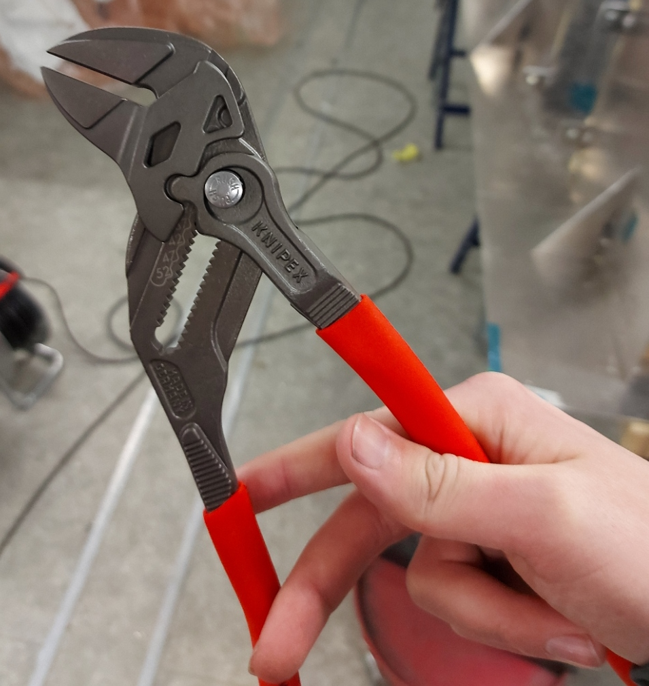

Project 3 - 3D printing and scanning
Project description
The project is two fold, 3D print something and 3D scan something. The 3D printed part should not be readily machinable by traditional subtractive manufacture.
Part 1 - 3D printing
My idea for the project originally going to involved making complicated left and right handles that could be used like a bark scraper with a stanley knife blade. Howver due to time constrains and the complexity and delays that the 2D cutting project posed I decided to simplify this one.
I realized that to meet the requirement of the part not being machinable by subtractive manufacture I could use different infil densities to create something that is otherwise not possible with a homogenious material. From there I quickly arrived at the idea of a weigthted dice. Another idea I had was some sort of desk orniment that looks like it should tip over but doesn’t due to different infil densities keeping it balanced, perhaps that’s an idea someone else can take. For this project, I’ll go with the weighted dice.
CAD
I drew the dice part after making the drawings for project 2 so I seized the opportinity to parametrize the drawing. The final version has 4 driving dimensions, the cube edge length, the indent radius, the indent offset from surface and the corner radius. All the CAD work was done in Inventor.

As implied above, I made the indents by creating a plane a defined distance above the surface and revolve cut the circle from that plane to create the indent. The remainder of the drawing was trivial.
Exporting and print configuration
To be able to print I need to get the model into prusa slicer, which requires that the model is in some sort of standard format. I used the .STEP format but some other formats can be used as well. For this print the most appropriate filament to use was PLA since I did not need any of the properties of PETG and PLA is more environmentally friendly. Once the model was in the Prusa slicer, I copied the dice so that I could have a control dice that wasn’t biased. With the help of a youtube tutorial I found, I created a different infil region for one of the dice. I put 70% infil density in on the #1 side of one dice to increase the weight only on that side. The infil density of all other regions was 20%.

Here we can see the region defined for different infill.

Here we can see the infil pattern with the different density.
Results and testing
The print was successful on the first try, using the default settings for the Prusa i3 MK3 printer and took just under an hour. There was no visual difference between the two dice. I asked several people to try to find the difference between the non-weighted and weighted dice and no one was able to spot any difference without hints about weight. There is a very subtle difference in overall weight of the two dice. I could have printed the non-weighted dice with a higher infil density to get the weights closer but I didn’t think of that at the time. Here is a picture of the dice ontop of my cat, Guðbrandur Biskup.

I threw each dice 120 times to get a good average result for each. Consider that the average result of a fair dice is exactly 3.5. It seems counterintuitive but the average of 1, 2, 3, 4, 5, 6 is indeed 3.5. The average result across 120 throws were 4.05 for one dice, and 3.59 for the other. I’ll let you guess which one feels slightly heavier. This result is interesting since the supposedly non-weighted dice is in fact not fair. This could be because of the very subtle effect of the different number of indents on the surface of each side. In theory, even on a fair dice, the #1 side is heaviest, and the #6 side is lightest, which should slightly shift the average higher than 3.5. Another factor that could be influencing the results is that the infill pattern may not have the same line density in all directions. If the vertical, or Z-axis, line density of higher, this in theory should slightly increase the probability of rolling a 3 or 4. Rolling more 3 and 4 should not affect the average however so I am unsure if this is the reason for the average being higher than 3.5 for the non-weighted dice. Overall the project was a success, I created a weighted dice that can’t be readily made using subtractive manufacture and it rolls an average just over 4.
Part 2 - 3D scanning
Initially I wanted to scan a wing rib from my airplane since I wanted to have a CAD drawing of the airfoil for other projects. I tried scanning the rib using a handheld 3D scanner HÍ but this proved to be futile. I made several attempts to scan the rib and even put down tape markings down on the floor next to where I scanning to help. The idea was that the tape may give the scanner reference points so it wouldn't lose track of it's location relative to the rib. After several failed attempts at this I tried to scan a roll of tape on the table I was working at. The scanner also failed this most simple of tasks miserably. That marked the end of this particular scanner's adventures in my hands. Here is a picture of the rib I was trying to scan.

The new approach
Upon speaking to some of my classmates I learned that most people were using phone apps to scan. I was recommended an app named "Polycam". I decided to scan my favorite tool, the Knipex flat jaw pliers. I love it so much because it can be used as any (reasonably) sized wrench and as a bonus it's great for making bends in sheet metal. I positioned the pliers in a vice and started scanning.
Results


Clearly, there is considerable loss in detail, especially in small shapes like the adjustment rail teeth and the thickness of the jaws was not captured well. I scanned the pliers twice but the second attempt was worse than the first, pictured above. The app does not allow you to export any kind of 3D representation of the scan without paying for the app, hence I have screenshots from their website. However, you can inspect the model yourself on their website. Lastly, here is a picture of the pliers in good detail for comparison.
